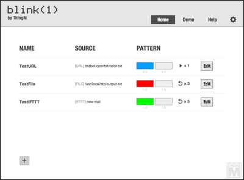
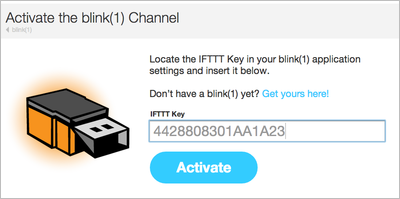
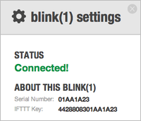
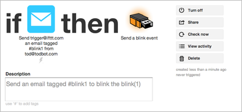
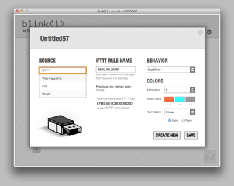

On the Home screen for the application you'll see a summary list of the different "triggers" you have set up. Here's what it looks like with a few Triggers configured.
To add new Triggers, click the "+" button in the lower-left.
IFTTT gives you access to a vast array of network-based events for display on your blink(1).
To create the connection between IFTTT and your blink(1), after you create an account on IFTTT.com, click on the blink(1) channel. Activate the IFTT blink(1) channel by entering your blink(1) IFTTT key, available from the "gear" menu in the Blink1Contol app.

Now create a recipe on IFTTT with a blink(1) action. The action wants a "rule name". Pick any short text string you like. In Blink1Control, create a new Trigger with IFTTT as the source and the same text string as the IFTTT Rule Name. In the example below, the rule name is "blink_my_blink1".


More to come...
More to come...
More to come...